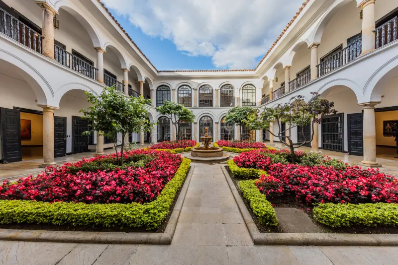
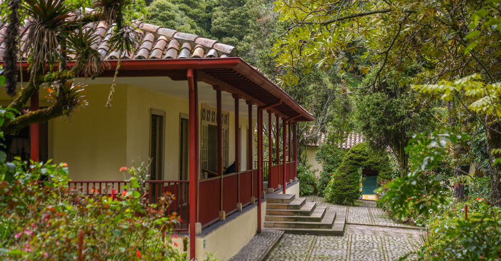
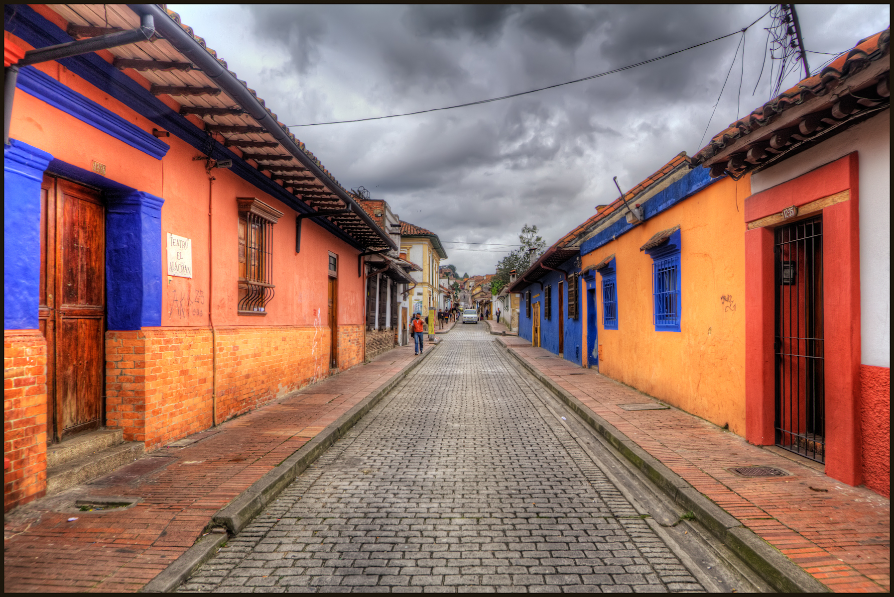
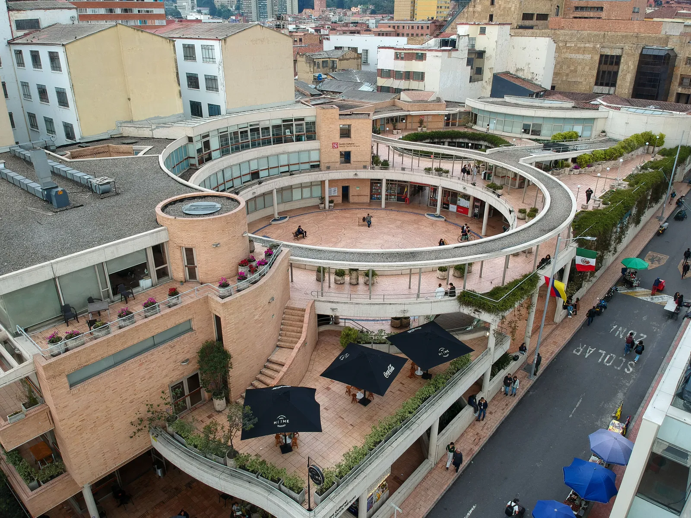

Cultura Bogotana
Museos de Historia
Museo del Oro
La colección de orfebrería prehispánica más grande del mundo. Un viaje al pasado indígena de Colombia.

Museo Botero
Ubicado en una casona colonial, alberga las famosas obras de figuras voluminosas del maestro Fernando Botero.

Quinta de Bolívar
La casa histórica donde vivió el Libertador Simón Bolívar, rodeada de hermosos jardines al pie del cerro.
Arte y Teatro
Teatro Colón
Joyero arquitectónico de estilo neoclásico y el teatro nacional de Colombia, famoso por su acústica perfecta.

Barrio La Candelaria
Caminar por sus calles empedradas es vivir la historia viva, entre bibliotecas, cafés y fachadas de colores.

C.C. Gabriel García Márquez
Un espacio moderno dedicado a la literatura y las artes, diseñado por el arquitecto Rogelio Salmona.